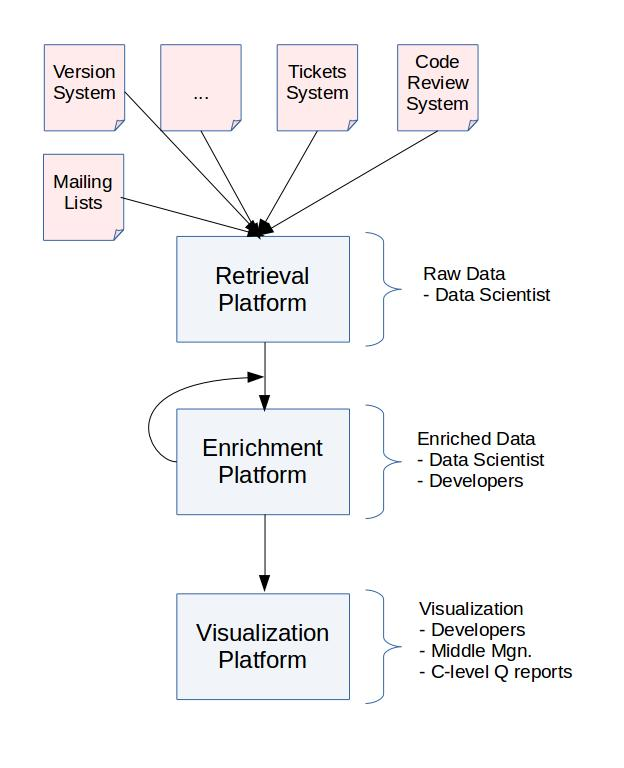

Managing InnerSource Projects book

What is this book about?
This book is intended to cover all aspects of managing an InnerSource Program at an organization. Pitching, starting, scaling, training, governance, infrastructure, metrics, motivation, and much more! If there is any explanation that you need in relation to your InnerSource Program, then this book is intended to have it.
How is the book structured?
This book is divided into sections and articles, each of which cover one single aspect of an InnerSource Program. Articles should be relatively short and self-contained so that they can be read in any order and any amount and still be useful. Detailed explanation of InnerSource topics should go in the InnerSource Patterns book and be linked from the article here. Think of the articles in this book like either a conversational introduction/summary to a pattern or possible a journey showing how multiple patterns can be used together in an InnerSource Program.
Who can contribute?
This book is a work in progress where anyone is more than welcome to contribute in any possible way. Ideas, comments, typos, full paragraphs or sections would be great. This repository aims at bringing specialized knowledge from the industry within this respect in a way that this is useful for third parties. For this, we are actively looking for reviewers that can help in this process. For those that have already contributed to the book, thanks a lot!
You can find more information about the process in our contributing section.
Who is fostering this initiative?
We thank Bitergia (especially José Manrique López and Daniel Izquierdo) for starting this book and seeding it with its main areas of expertise such as the usual metrics and KPI's to use, the methodology, the metrics strategy around your general InnerSource strategy and the infrastructure needed to have a successful InnerSource journey within a company.
The book is now managed by the ISPO Working Group. It is open for use and contribution by anyone interested in InnerSource. Come join us and contribute!
How Do We Structure Goals, Questions, and Metrics?
Review the Goal-Question-Metric Approach to further understand how we structure goals, questions, and metrics. Review GQM use cases and user journeys to guide their development.
We document goals, questions, and metrics in separate folders in the measuring directory. You can browse all goals, questions, and metrics in graph format.
Add in your own scenarios to the graph! See the "Metrics" section of CONTRIBUTING.md.
References
For further reading, we encourage you to participate in the InnerSource Commons, a non-profit foundation where dozens of companies are already sharing experiences and working to improve their craft of InnerSource.
Acknowledgements
Each chapter in the book is authored and reviewed by different people. That information can be found at the beginning of each chapter. This initiative is fostered by the ISPO Working Group. For further questions, please contact us in Slack!
The book cover was created by Sebastian Spier, using an image by user Bru-nO, available under the Pixabay License.
All of the content found in this repository is licensed CC BY-SA 4.0.
Introduction
It was 2011 when Marc Andreessen wrote his famous article, “Why Software is eating the World”1. By that time, Linux Kernel was already 20 years old, developed under an open collaborative model by hundreds of developers from different companies, and some even contributing during their spare time. Linux can be found in almost any kind of device, from IoT and car components, to super computing cloud hardware, without forgetting one of the most used mobile operating systems in the market.
And Linux is just one example of how a free, open source software (OSS) project has evolved from one single idea in one single person’s head to multiple applications in many different fields and sectors. Each application has improved it over time, thanks to its open collaborative development methodology.
Almost 6 years later, we can assure that free, open source software (OSS) projects have succeed in the IT development ecosystem. We can see companies adopting OSS technologies and people contributing to OSS from different companies and even during their spare time.
How has OSS reached the level of innovation we have nowadays? How has it reached the market acceptance we see nowadays? How has it engaged so many people and organizations to contribute to it?
It’s a teamwork effort and quoting John Wooden (former UCLA Bruins basketball coach) in IBM Linux commercial 2:
“A player who makes a team great is more valuable than a great player. Losing yourself in the group for the good of the group, that’s teamwork.”
Since the collaboration methodologies used in OSS projects are providing high quality innovative technology thanks to engaged development communities, why not applying same methodologies inside your company? That's InnerSource!
If you haven't decided yet to apply InnerSource in your company, we recommend you start reading "Getting Started with InnerSource"3 by Andy Oran. After that, or if you have already decided to start the InnerSource path, this book will give you better understanding of InnerSource scenarios, framework and management skills.
InnerSource principles
InnerSource software development takes its principles from the open source software development culture. Jim Jagielski, from The Apache Software Foundation, has listed them4 as:
- Culture
- Communication
- Transparency
- Collaboration
- Community
- Meritocracy
As an organization willing to adopt InnerSource methodology, the first step is to look how close are organization's principles with these open source ecosystem principles, and work on minimizing the deltas with them.
https://www.wsj.com/articles/SB10001424053111903480904576512250915629460
https://www.youtube.com/watch?v=x7ozaFbqg00
http://www.oreilly.com/programming/free/getting-started-with-innersource.csp
http://www.slideshare.net/jimjag/inner-source-enterprise-lessons-from-the-open-source-community
#InnerSource scenarios
Where InnerSource methodology is being used? Which kind of companies are already using it?
In 2000, Tim O'Reilly defined InnerSource as "the use of open source development techniques within the corporation". Clearly this definition applies to companies developing software for their own use or to be used by third parties.
Some common open source development techniques are:
-
transparent development: anyone is able to review and contribute
-
forks are welcome: innovation is usually driven by new ideas from existing projects
-
diverse teams: people from all around the world are able to contribute, independently of their gender, education, race, etc.
-
transparent communication: everything, from documents to conversations, is written and stored, to allow historical review
InnerSource, like open source, is well suited for cross-organization collaboration breaking boundaries of teams, business units and nations.
Beyond the obvious profile, software development companies, let's see some scenarios or situations where InnerSource can help.
The digital transformation wave
During last years, many companies have started facing what they call their “Digital Transformation”, to become omnichannel companies1. They become heavy IT users and the key transformation steps usually are defined by
-
breaking cross-organizational silos (cultural change)
-
adoption new IT technologies (cloud, big data, mobile, etc.)
The adoption of these technologies usually means that companies need to build competent “DevOps”2 teams. Yes, “DevOps”, the second hype-word after “Digital Transformation” of these ages.
“DevOps teams” share some principles with collaborative development teams in the open source world. As first described by John Willis and Damon Edwards in 2010, CALMS, standing for Culture (collaboration), Automation, Lean, Measurement, and Sharing to describe the “DevOps framework”, obviously contains terms familiar to any open source developer.
These teams usually develop custom software solutions and deployment recipes for their companies. For small, medium enterprises (SME) this could be useful and easy to manage. But, what happens when the company has several DevOps teams around the world? How can they ensure a maximum code/knowledge reuse across the organization?
We have seen companies facing the same problem with different solutions due to the lack of cross-organizational transparent and collaborative methodology.
The world of silos
In some cases, there is a corporate head or central unit that decides the technology for the rest of business units. When these business units adopt the technology, they usually need to customize it, ending with something slightly different to the original product. While the central unit evolves its product in their “closed silo”, the other units are probably doing the same in their “silos”. The result? The adoption of any update of the “core product” is a nightmare.
In other cases, business units behave as independent companies. Each one uses their own IT architecture, ending with an inefficient management of resources caused by multiplication of technologies, developments, etc.
Collaborative development in open source ecosystems has been used several times as an example of how these methodologies can break silos between companies that might be even market competitors. Those companies have been able to share knowledge and resources with a common goal . If competitors can collaborate to build technology in which their business rely on, why could not corporate business units do the same if they have corporate success as mission?
The start-ups bubble
Many people might discuss if we are living a “start-ups bubble” or not, but we are clearly surrounded by news about how a group of few people go from a garage to a multinational company in a few years through investment rounds.
Our experience tell us that opening offices abroad is always a challenge, and managing development teams growing that fast can be a serious problem.
The lack of effective and transparent communication channels and documented procedures, might make harder any new employee on-boarding and to be engaged with the company.
On the other hand, recently created companies have been born taking advantage of the existing IT solutions to provide omnichannel services. They are used to work under “DevOps culture” and it might be easier for them to adopt a common cross-organizational methodology that allow transparency and collaboration.
Disengagement at work
If previous scenarios are familiar to you, probably you don’t feel engaged at work. Don’t worry, you are not alone. According to World Economic Forum 3 70% of employees say they are disengaged at work.
In the same article, it says that “Research from the University of California found that motivated employees were 31% more productive, had 37% higher sales, and were three times more creative than demotivated employees. They were also 87% less likely to quit, according to a Corporate Leadership Council study on over 50,000 people”.
Towers Watson4 found that companies with engaged employees produced 19.2% more operative incomes in one year, but companies with worse engagement operative incomes get reduced by 32.7%.
It was Daniel Pink in his book "Drive"5 who argues that human motivation is largely intrinsic. The aspects of this motivation can be divided into
-
autonomy, typical for OSS projects developers that are self-managed
-
mastery, as the desire to improve developer skills to improve the project they are involved in
-
purpose, defined as mission in many OSS projects
These aspects are key for software developers motivation, since their tasks involve cognitive skills, decision-making, creativity, or higher-order thinking.
https://en.wikipedia.org/wiki/Omnichannel
https://en.wikipedia.org/wiki/DevOps
https://www.weforum.org/agenda/2016/11/70-of-employees-say-they-are-disengaged-at-work-heres-how-to-motivate-them/
http://www.towerswatson.com/DownloadMedia.aspx?media=%7B1EBA6F1E-B1E7-4F0A-A9F7-D828C4D8B2AE%7D
https://en.wikipedia.org/wiki/Drive:_The_Surprising_Truth_About_What_Motivates_Us
InnerSource framework
By adopting InnerSource methodology and principles, organizations get:
-
Effective resources management, with better code/knowledge reuse and cost sharing across the different units
-
Faster technology innovations/improvements, since the code is developed collaboratively and transparently by interested people and units
-
Empowered employees, increasing engagement by letting them to be part of companies development roadmap
-
Higher inner-innovation, by allowing employees to propose new ideas and implementations based on company’s technology/knowledge
But any project, even open source ones, need a framework that support them defining:
-
clear policies for contributors, to manage meritocracy (or do-cracy)
-
tools and communication channels
-
community culture
-
who pays it?
-
metrics and KPIs
Let's introduce the InnerSource framework.
Governance
A core aspect of the InnerSource framework is the governance model. Good governance is essential for the success of any project, and InnerSource is no exception.
Pick the right governance standards and model for your organization.
Technical infrastructure
By technical infrastructure we describe the tools used by InnerSource developers for their daily work. Usually, this tools cover:
-
Source code management systems
-
Issue/tasks tracking systems
-
Forums or mailing lists, and "questions and answers" forums
-
Chat or instant messaging tools
-
Continuous integration systems
-
Document/knowledge management systems (wikis)
Collaboration as cultural change
Creating an engaged community is one of the key points for open source projects success and sustainability. Same principle applies for InnerSource projects.
Managing a community is different from traditional development teams management, so project managers need to adapt their skills to the new scenario.
Open source communities are very flat organizations where leadership is usually more important than formal power. Companies adopting InnerSource need to adapt their organizational structure to a flatter one.
Financial support
In a perfect InnerSource scenario, and based in David Pink quote you should pay enough “to take the issue of money off the table.”
But we usually don't live in perfect worlds, and there are several scenarios where financial support for InnerSource projects are critical:
-
payment in different geographical regions
-
employees working in a mix of InnerSource and non-InnerSource projects
-
cost sharing between different business units with their own budget
-
projects developed by a mix of company employees and subcontractors
Again, open source provides some examples of how to get financial support for their projects, and organizations like Linux Foundation, Apache Software Foundation, etc. could work as reference, translating their "foundation" principles to our companies.
Processes measurement
Last but not least, if we are speaking about management, to measure becomes a basic skill for us.
Beyond collecting data, managers need to understand the goals of the organization and how the gathered data can help them to achieve such goals. They also need to take care of how they share that data with the teams, and what they want to achieve.
“Collecting data is only the first step toward wisdom, but sharing data is the first step toward community.” – Henry Lewis Gates (professor at Harvard)
Open measurement gives a lot of benefits for our InnerSource community:
-
awareness, it allows us to understand who we are, what we are doing, etc.
-
governance check, monitoring policies implementation
-
transparency, as trust generator for third parties and fairness for our InnerSource community
Authors and Reviewers
Authors
(Chronological order)
- J. Manrique López (Bitergia)
Reviewers
(Chronological order)
- Daniel Izquierdo (Bitergia)
Introduction
Infrastructure is one of the key aspects when dealing with InnerSource. This provides the tools necessary to develop and communicate across the development teams.
Developers, middle management and C-level are all part of this process. All of these groups are part of the mindset change to be part of a more open software development process. And any of those should accept the new rules to play.
As InnerSource aims at bringing some of the principles when developing in open source communities, InnerSource communities needs a cultural change where open communication and transparency in the decision making process are vital.
Thus the selected infrastructure must be open and transparent by design. And this should help developers to follow some specific tracks such as code review processes. This should help to avoid work-arounds as well. Any contributor to the new infrastructure must follow the same rules. There will be differences in the access level permitted such as those developers that are newcomers versus those that already have commit rights.
In addition to this, this infrastructure must be simple following the KISS (Keep It Short and Simple) approach. This will help to lower the barrier access to new contributors. The easier the process is, the more attractive the process to first contribute to any data source.
This is something that already takes place in OSS communities. They usually need a subscription in some of the tools such as the mailing lists or the wikis. And once this is done, the contributor is allowed to update wikis or send emails. In the case of the source code the process has been lately more bureaucratic as code review has become more and more important.
On the other hand, sites like GitHub or GitLab provide under one single account access to work on the source code, issues, pull requests and wiki editions. Communities using this infrastructure usually have a governance model where any type of change should be followed by a review from a trusted committer.
When inner sourcing, there are key aspects that should be taken into account. All of those are related to being opened, transparent as their main attributes, but also archivable, searchable and friendly when used and mined.
-
Openness. Every tool used in the software development process should be accessible by anyone within the organization. Any person related in somehow to the development process should have access to this. This is helpful to build confidence across developers and lower the barriers to anyone willing to contribute to the InnerSourced projects. Any contribution is welcome and being open to any type of contributor is necessary.
-
Transparency. This is focused on the authorship of the several contributions. From pure code submission processes to fixing typos, everything needs to be registered and the authorship of any change should have an author.
Having the authorship of any contribution will help to understand who are the main contributors within the community. And those will be part of the core of such communities. As there are contributions beyond the code, the ownership of the contributions should help to understand other types of contributions. From documentation to mentorship or helping others in the forums are activities of interest in InnerSource communities.
-
Archivable. Any tool should provide an archive of previous actions. This will help when talking about specific pieces of code, previous technical discussions in the communication channels or decisions made during the design summits. This should help for referencing purposes.
-
Searchable. As more and more projects will be added to the InnerSource process, the amount of repositories of information will grow in the same way. It is important to have searching capabilities within the platform. This will help to reuse and discover projects and contributors useful for our own purposes. This should also help to understand if there are other projects filling your specific needs.
-
Data Retrieval Friendly. This is an important aspect. The toolchain selected should be easy to mine. This could be an external tool that mines any available data source and builds specific areas of the software development process. Or this could be provided by the very same infrastructure. This will help the community to understand where the bottlenecks in the process are found, but also will help to detect potential flames, blockers and any other non-desired situation.
As detailed in the metrics chapter, data play a key role in the deployment of the InnerSource methodology. This will help to understand where the whole process is going and make decisions when necessary to follow the right direction. For this, tools that allow to retrieve information through an API (e.g.: GitHub API) or thanks to a log system (e.g.: 'git log' command line) are of great importance.
-
Access rights. As there is an open and transparent process to make decisions that foster the participation, it is worth using an infrastructure that limits the access to certain roles within the organization. Everyone is invited to participate, but a subset of the contributors will have the right to submit those pieces of source code or edit the wikis in the documentation. The infrastructure should allow this roles division. Anyone is welcome to read, but some of them are allowed to write.
All of these are probably already known as those are key aspects when deploying infrastructure in open source projects. There are two great books that have already dealt with this issue. Producing Open Source Software by Karl Fogel and The Art of Community by Jono Bacon. The first one focuses on the needed and basic infrastructure when starting from scratch an open source project. While the latter is focused on how to support specific workflows with tools. And both are great approaches when dealing with open source projects and partially useful when dealing with InnerSource projects.
As Jono states in his book "To select the right tools for the job, we need first to understand what we are trying to achieve. We need to know what our workflow is".
The following section focuses on the infrastructure needs when starting an InnerSource project. In the basics there are not main differences from the key aspects point of view. However we have to deal with existing, internal and in some cases access-restricted infrastructure and check if that infrastructure is enough for our new purposes and goals when inner-sourcing.
Thus there are two main areas to consider: first if we can reuse existing infrastructure and second if we need new infrastructure, what tools are available that fit with our key-aspects requirements.
Basic Infrastructure
As InnerSource is mainly about cultural change, we need to have an easy-access and low barrier tools. The easier to use, the more developers that will try in first place to work with other business units and inner-sourced projects.
Although there is a code review process and this takes time to learn, there are other areas where developers can start to contribute. From documentation and mere typos in the collaborative wiki to design meetings and even review activities in projects of your interest or asking for feature requests. There is a myriad of potential actions that anyone within the organization can help with. And the goal of InnerSource is to foster those actions as much as possible letting developers know that those actions are really much appreciated.
The infrastructure is thus divided into three main areas:
-
In first place the development process infrastructure that contains the basic tooling for developers. Selecting the right tools will help to have a clear process and that process will bring trustiness to the community. Any developer must follow that process and work-arounds should not exist. As an example, any developer, even core or trusted committers should face a review process when submitting a piece of code. It is clear that trusted committers have a reputation in the community and this will help in the review process, but they still need to go through the process. A clear workflow brings trust across the business units. That certainty in the definition of requirements, software development process, use of versioning or ticketing systems, the code review process and the continuous integration helps with this.
-
In second place a solid use of the communication channels infrastructure. These tools should be as transparent as possible and any technical meeting must be followed by a summary of results and decisions in the mailing list. This helps to open technical discussions, but also to reference to previous decisions made. As we are considering large organizations, it is also necessary the use of asynchronous communication channels such as the usual IRC in open source communities. More advanced options could be the use of Slack but also Mattermost if the organization prefers to use open source and in house SaaS deployments.
-
In third place the monitoring infrastructure is key when applying InnerSource and in general when bringing a new methodology to organizations. This is one of the main differences with open source communities. They are open by default and basically follow the detailed key aspects. However, infrastructure to measure process advances have not been one of the main goals in the case of open source communities. Basically they are using a successful development methodology, each of them with their own peculiarities, but open by default. InnerSource needs of this type of infrastructure as managers and developers need feedback about their performance. A change in the software development process of large organizations, a cultural change and the community building process needs a large set of actions and those actions should have the confirmation that they are working. For this the organization and its business units need of a monitoring infrastructure.
Development Process Infrastructure
When developing there are three main tools to take into account: the versioning , code review and continuous integration systems. Those should follow a process similar to the one depicted in the following picture. If this process is familiar to you is because this is based on the OpenStack software development process as detailed in their wiki site. I have copied the workflow as this contains the basic pieces also needed for InnerSource. Other communities use a similar approach, although I did not find a nice picture! Sorry folks!. In addition to this, this is a new figure as I wanted to have it independent of the infrastructure. OpenStack uses Git, Gerrit and other tooling for this process, but others are also possible. As an example the Linux Kernel uses mailing lists for the code review process or the Mozilla community that uses another toolchain. Think of the figure as a generic way to introduce code review and continuous integration aspects in the software development process.
In short, the process in the figure is as follows: the developer should clone the repository(1) make changes to it (2), run some local tests (3), pull request those changes (4), tests will be run (5) with a specific result (6). If that result is negative, then we need to go through a new version of the code and come back to the local environment (7: Review process -> Updated Copy of Upstream). If the CI works and there is a positive answer from the Review Process, then this go again through CI before being committed to master (8). If the review process provides a negative evaluation then the piece of code goes back again to the submitter (7: Review process -> Updated Copy of Upstream).

-
Versioning system: this tool is used by developers to store the several iterations of a given piece of software. As developers are basically geographically distributed, the versioning system should allow this type of interactions, where any developer at any time may submit a piece of code to be reviewed. Systems that allow off-line development are highly recommended as developers will be able to locally work and later submit the code.
-
Code review system: once the piece of code is ready to be submitted, this should be previously reviewed by another developer. This forces developers to submit that piece of code through a specific process. As an example, there are several ways where open source communities code review others, using specific tools, sending the piece of code to a mailing list or integrated in the versioning system tool. As one of the main goals when inner sourcing is to keep the process as simple as possible, the main recommendation is to avoid too noise channels (as mailing lists) or too hard to use tools. It is also recommended to use tools that help others to start developing a new piece of source code without needing to submit that to review. Early discussions in the code review process helps to produce better code and having mentors involved in the process.
-
Continuous integration (CI) system: this is one of the key tooling when developing. There are already several eyes having a look at the source code in the code review process. With the addition of a continuous integration platform, any type of test should be covered: regression, unit testing, end user tests, etc. Ideally this platform should be integrated with the code review process. In this way, developers can wait for the answer for the CI system before proceeding with the code review process. They would be sure that this works prior any effort from them.
-
Ticketing system: tickets are useful to attract community to an InnerSource project. This helps in two specific ways: transparency of the development process, raising issues and having a roadmap of the issues to be closed. And in second place, to provide a platform for newcomers and users to detail their needs. Tickets are helpful to bring community in inner source projects as users of the platform will open bug reports, but also feature requests. And even those can socialized as the community can vote those reports and declare what are the most important for them. This information is key to let developers know about the community and business units needs. Then all of this can be discussed during the design summits defining further roadmaps based on users, developers and organizations requirements.
-
Documentation system: documentation is now available to any member of the organization. And documentation has extra goals when producing it. Not only to developers, but to users. Indeed the documentation should be focused on several roles. From developers to users, the documentation should cover their needs. And as such, documentation should be transparent and open to any potential change from members. This will help to adequate the documentation to the users needs, but also to other members within the organization. The tool used should allow to have all of these pieces of information. From the usual developers APIs to high level users interested in understanding what that piece of code offers to the organization. It is worth mentioning that the documentation also covers information as general as the mission and the type of things that the piece of code does and the things that this does not do.
-
Collaborative design platform: InnerSource in large organizations is a synonym of geographically distributed teams. Face to face meetings are hard to have in this type of organizations, but there should exist infrastructure to bridge those difficulties. Requirements specifications, technical decisions, TODOs lists and others should be stored in this type of collaborative environments. This will provide transparency to the process, but also informal documentation and communication. Even when the developers are in face to face meetings, those tools should be used as they will leave traces of activity readable by others within the organization.

Communication Channels Infrastructure
InnerSource is about cultural change. And that cultural change is based on transparency and meritocracy. Communication channels should be open within the organization, and anyone is allowed to post to them.
Any decision out of the public channels should be later written down in these as any decision should be traceable and referenceable.
-
Mailing Lists / Forums: this asynchronous way of communicating across the developer teams is highly effective. Being geographically distributed force the members of the organization to avoid direct communication channels when possible as people lives in different time zones.
-
Instant Messaging: this is another asynchronous communication channel. From the usual IRC channels used in open source software, to other open source options such as Mattermost, this helps to lead technical discussions, store the log information and have all of the developers in a virtual room where they can discuss, but also users can enter looking for advice.
-
Questions / Answers: this type of platforms help to raise questions and share those with the rest of the community. Users and developers can vote the most interesting ones and this helps to bring attention to issues of interest for the internal inner-sourced community.
-
Video conference: face to face meeting definitively helps. And even more when discussing about technical issues. This type of synchronous communication channels are useful for discussions but force people to be at the same time in the same virtual room. As there could be members from several time zones, those are more difficult to set than conversations in the instant messaging or mailing lists.
Monitoring Infrastructure
This infrastructure is needed to understand the current situation of the software development process and should help in the decision making process. One of the key aspects when choosing a specific toolchain is that this is data retrieval friendly. This means that any tool is now a data source and such data source should provide a way to mine this. This will provide raw data information that should be later parsed and treated to be useful.
There is extra information in the metrics chapter, but in brief, any organization applying InnerSource, or any other new methodology, should have a way to check how that new process is performing when compared to the old way.
This monitoring infrastructure should also have as outcomes several ways of accessing such information. And this depends on the role accessing the information. Although everyone in the organization may have access to the information released by the development and communication channels toolchain, not all of them will be interested in accessing the raw data or the high level and quarterly reports focused on C-level.
For this the monitoring platform should provide access to the raw data retrieved from all of the data sources, to the enriched data after removing inconsistencies, and the final outcomes as dashboards, KPIs or quarterly reports. Indeed, having actionable data will help the members of the community to align those outcomes to their specific needs.
The following is a potential architecture that could help when accessing the several data layers, from raw information to detailed visualizations.

-
Retrieval Platform: this first part uses as input any of the data sources already mentioned. Version systems, mailing lists, tickets, collaborative documents and others should have some way of retrieving the information those contain. There may be some tools that produce events and those events are not stored anymore. This platform should take care of these cases. As an example of temporary logs, if there is not a policy to take care of the Apache logs or the jobs run by a Jenkins instance, there is not a way to retrieve old datasets.
-
Enrichment Platform: this part of the data analysis focuses on cleaning and preparing the data for visualization.
-
Visualization Platform: this third part of the monitoring platform should help to produce the outcomes needed to track the status of the methodology process. By visualization, this platform produces actionable charts, but also KPIs or static documents to be shared with third parties.
Comparing How InnerSourced your Infrastructure is
Just detailing the infrastructure needed within an organization to effectively apply InnerSource would be simplistic. This section aims at listing the questions you need to ask to your infrastructure team to check if that internal and well known infrastructure is able to be part of the InnerSource process.
The goal of this section is to compare the internal infrastructure used within an organization and check how close this is to an ideal InnerSource toolchain. As detail, in the software development process, it is necessary the use of specific tools such as the versioning system, code review process, ticketing system, continuous integration, documentation storage and collaborative platform to share technical decisions.
For each of those, we need to check if they are following the key aspects provided such as openness.
Development Process Infrastructure
| Openness | Transparency | Archivable | Searchable | Monitoring | Access Rights | |
|---|---|---|---|---|---|---|
| Versioning | ||||||
| Ticketing system | ||||||
| Code Review | ||||||
| CI | ||||||
| Wiki/Documentation | ||||||
| TODO List | ||||||
| Collaborative notes |
Communication Channels Infrastructure
| Openness | Transparency | Archivable | Searchable | Monitoring | Access Rights | |
|---|---|---|---|---|---|---|
| Mailing lists/forums | ||||||
| Instant channels | ||||||
| Questions/Answers |
Monitoring Infrastructure
| Openness | Transparency | Archivable | Searchable | Monitoring | Access Rights | |
|---|---|---|---|---|---|---|
| Retrieval platform | ||||||
| Enrichment platform | ||||||
| Visualization platform |
Some Examples of Infrastructure
GitHub enterprise. GitLab. In house repositories. Atlasian stack.
Authors and Reviewers
Authors
(Chronological order)
- Daniel Izquierdo (Bitergia)
Reviewers
(Chronological order)
- Looking for reviewers!
What, When and How to Measure
Choosing the right software metrics is not an easy task. If you have access to data, and in software development a lot of data can be gathered, you can easily think of many possible metrics. Sometimes, too many... up to the point of reaching saturation!
This report aims to formalize a strategy and a method to identify, acquire and understand metrics, and how to apply those to the inner source world. Part of the information found in this document is built on top of previous literature and talks about InnerSource. However, none of the former seems to focus specifically on the metrics needed to understand if a process is working as expected, or if substantial changes are required.
As InnerSource is a medium or long term activity, as any new methodology to be applied within a company, feedback about the process and performance is key to assure its quality. This report has as goal to be the glue between developers, managers and C-level. It aims to help them build a proper mining software structure based on key indicators that will help to lead the improvement of the process. And specifically in the case of inner sourcing, this document is expected to help when selecting initial metrics and studies to lead that process.
It is worth mentioning that the whole organizational structure should be aligned with the metrics used for the analysis. Qualitative feedback from the several layers of the organization is also a key part of this process, involving from developers to C-level and going through middle management. They all should understand that these tracking actions are following a specific goal and not tracking their own individual activities.
Rewarding systems on top of the metrics are also recommended, but always with a specific focus on fostering some actions such as pushing developers to commit their first pull request[^1]. The point about having metrics is that people can cheat on them, so when fostering specific behaviors, those should be use in short periods of time to help developers to get used to some way of developing. The most recommended use of metrics is to track the performance of the whole community and how to avoid bottlenecks and actions that may delay their activity.
The approach presented in this report follows the GQM approach (Goal-Question-Metric)[^2]. This consists of declaring the goal(s) of a specific decision, then state a set of questions that fit in that goal, and finally come back with a list of metrics that answer each of the proposed questions.
As InnerSource has a different meaning depending on the organization where it is deployed, InnerSource may have different goals. However, there are some goals that are usually required across organizations and that can be divided into these main groups[^3]:
-
Improve code quality through continuous integration (CI). Open source projects are used to CI and peer review process. And specifically having many eyes to any piece of code going to master help a lot to detect potential issues in advance. It has been measured that having code review in your process helps up to the point of saving half of the potential spending when maintaining the software[^4]. On the other hand, CI allows to automate checks that were usually done by human beings, such as unit testing, regression tests, style checkers and others.
-
Decrease time to market. As silos are broken within the organization, there are developers and business units across the organization that are willing to work on the same topic. And this helps to increase the velocity of the development process.
-
Allow innovation within developers. Developers are now allowed to collaborate with others and create their own social networks with other business units. This collaboration helps to bring new points of view to the same problem what allows to bring innovation to the same problem. Developers can easily now create new repositories under some rules, having those projects as incubators and get traction from other developers that may participate in such project at some point. Do-ocracy could be also part of the process.
-
Reduce development and maintenance costs. Maintenance is reduced to the decrease of business units working on the same topic and this cost is now shared among all of them. And this applies to the development and maintenance point of view. Any business unit interested in participating in a project as their goals are aligned to such project may provide resources.
-
And last but not least, allowing developers to work on the topics they feel are important for the organization or on their own interest help them to be more comfortable. InnerSource helps to improve the retention of the good developers for the organizations, but also helps in the recruitment process as the organization is seen as innovative and listen to developers needs. This helps to the general engagement in the organization.
Goals using Metrics
This section aims at providing a strategy for your InnerSource metrics that help to understand the path from your initial process till a full InnerSource organization.
It is important to remark that metrics useful for some organizations are not that useful in other contexts. This is similar to the open source projects where a project is not that similar to other in terms of governance, licenses, infrastructure or detailed process, but they are producing open source software and working as a community. This handbook has a similar goal, to detail how an ideal InnerSource project would be, but there are not two organizations using the same InnerSource approach.
Thus, metrics useful for some contexts, for example technological organizations, might not apply to other context such as banks due to external factors such as legal regulations that are even different from country to country.
In addition to all of this, when measuring InnerSource, there are three main purposes to use metrics: check on going work, lead process improvement[^5] and motivational aspects.
-
Check on going work: this helps to understand where the development is right now. To be aware of the status helps to understand how fast things are changing when a new process is in the pipeline. This also helps to go from A to B and even trying several approaches to the same problem and have tests for this.
-
Lead process improvement: InnerSource means a change in how process works in the following. From a hierarchical way to a flatter way of working, InnerSource needs indicators to help to determine if that process improvement is properly working. And if this is not working, then using another approach or apply other policies.
-
Motivational aspects: InnerSource also means cultural change, and this is not usually taken into account in other methodologies. Indeed, this cultural change is identified in InnerSource as key. This should be the type of actions that will help to migrate from a traditional way of working to a more transparent and community- oriented way to work. And metrics can help to lead this process. First, to let developers know where they are and how their process is working, but also to have some fun within the work and competitions through challenges, hackathons and other measurable activities that lead to a more community-oriented organizations.
Use Goals, Questions, and Metrics
An overview of the Goals, Questions, and Metrics (GQM) catalog.
Right-click on any node representing a goal, question, or metric to open a new tab with more detailed information.
graph LR;
subgraph GQM[Goals, Questions, Metrics]
%% begin nodes
find-projects.md[Find InnerSource Projects]
reduce-duplication.md[Reduce duplication]
adoption-trend.md[What is the InnerSource adoption trend?]
who-contributes.md[Who contributes to the InnerSource project?]
who-uses.md[Who uses the InnerSource project?]
code-contributions.md[Code contributions]
contribution-distance.md[Contribution Distance]
number-of-innersource-repositories.md[Number of InnerSource repositories]
usage-count.md[Usage count]
%% end nodes
%% begin edges
find-projects.md-->who-uses.md
find-projects.md-->who-contributes.md
reduce-duplication.md-->who-uses.md
adoption-trend.md-->number-of-innersource-repositories.md
who-contributes.md-->code-contributions.md
who-contributes.md-->contribution-distance.md
who-uses.md-->usage-count.md
%% end edges
%% begin clicks
click find-projects.md "https://github.com/InnerSourceCommons/managing-inner-source-projects/blob/main/measuring/goals/find-projects.md" "Find InnerSource Projects"
click reduce-duplication.md "https://github.com/InnerSourceCommons/managing-inner-source-projects/blob/main/measuring/goals/reduce-duplication.md" "Reduce duplication"
click adoption-trend.md "https://github.com/InnerSourceCommons/managing-inner-source-projects/blob/main/measuring/questions/adoption-trend.md" "What is the InnerSource adoption trend?"
click who-contributes.md "https://github.com/InnerSourceCommons/managing-inner-source-projects/blob/main/measuring/questions/who-contributes.md" "Who contributes to the InnerSource project?"
click who-uses.md "https://github.com/InnerSourceCommons/managing-inner-source-projects/blob/main/measuring/questions/who-uses.md" "Who uses the InnerSource project?"
click code-contributions.md "https://github.com/InnerSourceCommons/managing-inner-source-projects/blob/main/measuring/metrics/code-contributions.md" "Code contributions"
click contribution-distance.md "https://github.com/InnerSourceCommons/managing-inner-source-projects/blob/main/measuring/metrics/contribution-distance.md" "Contribution Distance"
click number-of-innersource-repositories.md "https://github.com/InnerSourceCommons/managing-inner-source-projects/blob/main/measuring/metrics/number-of-innersource-repositories.md" "Number of InnerSource repositories"
click usage-count.md "https://github.com/InnerSourceCommons/managing-inner-source-projects/blob/main/measuring/metrics/usage-count.md" "Usage count"
%% end clicks
end
subgraph Legend
direction TB
goal[Goal]
question[Question]
metric[Metric]
classDef goals stroke:green,stroke-width:2px;
class goal,find-projects.md,reduce-duplication.md goals
classDef questions stroke:orange,stroke-width:2px;
class question,adoption-trend.md,who-contributes.md,who-uses.md questions
classDef metrics stroke:purple,stroke-width:2px;
class metric,code-contributions.md,contribution-distance.md,number-of-innersource-repositories.md,usage-count.md metrics
end
Add your goals, questions, and metrics into this graph! It will help you to see how others approach and interact with what you are doing. You may get new ideas of what metrics answer the questions you have or what additional goals your questions can support. See CONTRIBUTING.md#metrics.
Goals
Goal: Reduce duplication
Why should be build things more than once? We're already busy and behind where we'd like to be. We want to build just once software that solves common problems and then share it widely throughout the company.
Related Questions
| Question | How it relates to the goal | Gotchas |
|---|---|---|
| Who uses the InnerSource project? | Every instance of reduced duplication will show up as an increase in usage. | The converse is not necessarily true that every instance of increased usage is an instance of reduced duplication. It's always possible that some shared usage would have happened even without InnerSource. |
Questions
Question: Who uses the InnerSource project?
Depending on the InnerSource project, usage of the project could look something like:
- Inclusion of a module in a build.
- Calling and API.
- Visiting a UI.
Related Metrics
| Metric | How it answers the question | Gotchas |
|---|---|---|
| Usage count | We can see how many times an InnerSource project is reused. If there is extra information attached to that usage (like which business unit is the user) then we can see how widely across the company an InnerSource project is used. |
Metrics
Metric: Usage count
Synopsis: Count how many times the InnerSource project is used. Gain additional insight by gathering metadata on these usages such as business unit or time frame. With this additional metadata we can see how lopsided or even the usage is spread across the company and across time.
Unit of Measurement: Ordinal number.
Interpretation: Higher absolute usage count is generally better. Higher diversity of usage across business unit or time frame is generally better.
Measuring
If the project is an API and requires caller authentication, then read the API logs to determine the list of callers.
If the project is a module (or package), then scan your source control system for files that list out dependencies for a package manager to install. Here is a list of many package managers. Look in those dependencies for usage of your InnerSource project.
- The ORT project will parse out these dependencies for you.
- Snyk is a security tool that your organization may already use. As part of its operation, it already parses out these dependencies. This information is exposed via Snyk API.
Areas of Analysis
When analyzing software development projects, there are several areas that can be analyzed. Traditional analysis are focused on code metrics, while the activity, community and process are key components to take into account. This handbook brings into context those areas not that well studied, but key for InnerSource: community and process.
InnerSource is basically all about direct interactions between developers, removing all of the hierarchical aspects remaining in the middle. It is all about creating communities and building social networks that allow the knowledge to fly around. InnerSource is about leaving developers to work with other developers (D2D) jumping over the traditional hierarchies. This helps to increase the development activity, break silos of information and allow innovation within the organization.
-
Activity: this component focuses on the basics. Any developer when interacting with the infrastructure of the organization leaves traces of activity. From commits to emails, from tickets activity to code review actions. Any of these traces is potentially measurable and many of these traces from a lot of developers display an organization chart with trends information. Measuring activity means quantifying the basic traces left by the developers. And when this information is aggregated and calculated over time, it is possible to obtain trends about this type of information. Usual activity measurements can be the number of commits up to some date, but also the increase or decrease of such number of commits when comparing to time frames. This can be extended to any potential event that may take place in a community of developers: emails, reviews, opening a ticket, closing a ticket, commenting on a code review or sending an email, but there are others more elaborated such as actions as mentor, newcomers activity, cross-referenced information like tickets referencing pull requests and those referencing commits, etc.
-
Community: people are key when talking about InnerSource. If one of the goals consists of flattering the hierarchical structure of an organization, we need to measure how people interact with other developers. Although this is again measured through the traces left by the developers, the analysis proposed are pretty focused on the people and how they build their own social networks. As each developer has her own interests, it is necessary to understand how developers are attracted and retained in a project. What policies are more successful than others when attracting those and who are leaders in the software development process. Usual measurements in this case are related to the analysis of the contributors funnel coming to an internal project, effectiveness of specific policies to attract developers (e.g., hackathons) and others more specialized such as territoriality (how territorial a developer is) or betweenness if we play with some indicators when building networks.
-
Process: thus we have a community of developers working together and leaving traces of their activity. But InnerSource is something more than spreading the knowledge across the organization. It is also a matter of reducing the time to market, increasing the velocity of development and building better products. That is the reason why process is also a needed area of analysis. Process can be defined as the bureaucracy followed by the developers to write a piece of code. In a more hierarchical structure, there might be some daily meetings where some decisions are taken and requirements implemented. That is process and if we want to improve that, we need to measure in first place key parameters of such process. In Inner- Source communities, process is quite similar to open source communities where code style, documentation, code review process, continuous integration, design meetings are part of this process. The main difference here is how developers directly interact with other developers, even being from different business units, even been far away geographically. That interaction is the one we need to polish and improve if we want to increase the quality and velocity of the development process. Indeed the ideal goal when improving process is that the total process takes exactly 0 seconds. Once a piece of code comes out of the developers minds, this works, and can be automatically deployed. How can we reach that situation? I do not know, but hey!, at least we can measure that and check how far we are from heaven.
-
Code: this aspect of the analysis is probably a well known one. There are usual metrics that determine the complexity of the code, modularity, test coverage, documentation coverage, and others. What we have when measuring this type of metrics is that we can control where our InnerSource method is leading those metrics. Increases in the code complexity or less test coverage may indicate unexpected behaviors that should be fixed and controlled.
Goal-Question-Metric Approach
The Goal Question Metric approach defines a mechanism to provide an umbrella that helps to define and detail software metrics. This can be easily extended to other backgrounds, although InnerSource method basically fits in this type of evaluation.
As stated in the original paper: “Any engineering process requires feedback and evaluation. Software development is an engineering discipline and measurement is an ideal mechanism for feedback and evaluation. The measurement and information... helps in the understanding and control of the software processes and products. It helps in making intelligent decision and improving over time. But measurement must be focused, based upon goals and models. We need to establish goals for the various software processes and products and these goals should be measurable, driven by the appropriate models.”[^6]. The GQM has been extensively used in academia and the industry as a method to detail metrics useful for a set of pre-defined goals.
In the specific case of InnerSource, and summarizing, the following can be seen as some of the most important goals for InnerSource:
-
Goal 1. Improve code quality through CI and peer review
-
Goal 2. Decrease time to market
-
Goal 3. Allow innovation within developers
-
Goal 4. Reduce development and maintenance costs
-
Goal 5. Improve engagement within the organization
Then, each of the goals may have one or more questions that will answer those specific goals. And those are particularly related to the stage the process is. Although we may have the same goal when starting to apply InnerSource within an organization and when that method is fully established, the related questions are potentially different.
Let’s focus on Goal 5: improve engagement within the organization. We may start this process from a hierarchical organization where silos of developers exist and agile is used as their main methodology for software development. The specific question for a starting situation would be to understand if specific policies, such as opening the infrastructure, allowing public discussion, having design meetings and a long tail of activities fostering interactions among developers are actually working. On the other hand, in an inner-sourced organization, the question would be to keep improving the engagement or at least have a stable software development process with this respect.
Starting from scratch: Question 1: How many new attracted developers are participating in the InnerSourced projects?
Working on an inner-sourced community: Question 1: Is the attraction of new developers improving over time? And this question leads to Question 2: Are we retaining the new developers? And this finally leads to Question 3: How long does it take for a developer to leave the community?
It is clear that starting from scratch needs to focus on the initial stages of the process improvement, while in a mature process, there are other questions of importance.
And finally metrics. These are linked to each of the questions and may answer some of them at the same time. If we go for the four questions, we may define the following metrics:
-
Q1. How many new attracted developers are participating in the inner sourced projects?
-
M1. Number of newcomers.
-
M2. Relative number of newcomers out of the total number of developers.
-
-
Q2. Is the attraction of new developers improving over time?
-
M1. Number of newcomers.
-
M2. Relative number of newcomers out of the total number of developers
-
M3. Slope of the tendency of newcomers coming to the project
-
-
Q3. Are we retaining the new developers?
-
M4. Number of developers still developing that entered during the last year.
-
M5. Relative number of retained developers out of the newcomers during the last year.
-
-
Q4. How long does it take for a developer to leave the community?
- Median of the total time of all of the developers since their first commit till their last commit.
Strategy
Even when measuring and having data, people are still a key component of the strategy to deploy metrics and to have a driven-data process change. Metrics that lead to a process improvement or a motivational change are needed to be understood and approved by those that will be tracked. And there is not a need to measure everything, but to focus on specific areas of developers work that help to understand if this is working.
In addition to all of this, the metrics strategy is directly linked to the general purpose of the process update. From time to time organizations update their goals and those goals force a change in the metrics used to parse how far the organization is from those goals.
Thus, there are two main components in this process: goals and people. And developers must be aligned with the goals of the organization so everyone is walking the same path to success.
Developers and middle management should be part of the process to understand what the useful metrics are, to help to reject useless metrics and improve the metrics cycle. This will also help to introduce a data-driven development cycle and let the developers feel comfortable when using them.
When using metrics in InnerSource, we have already detailed the following purposes:
-
Awareness: be aware of the work in progress
-
Process Improvement: detect issues and understand the root causes of those issues (look for bottlenecks of your current process).
-
Motivational: let the development team follow some track (e.g.,: foster new contributions to a new project)
A usual way to apply a new methodology consists of following the PDCA (Plan-Do-Check-Act) to continuously improve. The steps ‘Plan’ and ‘Check’’ are the interesting ones for this metrics chapter, while the others are application of improvements in the process (‘Do’) and decision making (‘Act’).
The Planning actions consists of understanding the current situation of the process within the organization. For this and from a metrics point of view, it is necessary to retrieve qualitative and quantitative information. Quantitative in the sense of measuring what is taking place in the current development team and understand how developers and middle management use the infrastructure and interact among them. This will help to have a first glimpse of the situation of the project in a given moment in time.
From a qualitative point of view, feedback from developers and middle management is also necessary as they understand how the current process actually works. This is expected to fill the gap left by the quantitative approach and will help to understand if metrics are useful for their daily work, from a more managerial point of view or if they are useless at all for them.
Finally, it is necessary to define the goals, questions and metrics that will help to understand how much improvement we had when applying new policies in the software development process and other areas. Those metrics can also be linked to some actions such as alerts when the software process is not evolving as expected. And those alerts should end in actions or decisions in the ‘Act’ step.
Summarizing: qualitative and quantitative feedback, definition of goals and questions that will be checked later to measure success and tracking of the current situation of the project at the point of initiating this process.
Once the metrics and KPI’s were defined, the ‘Do’ step will take some weeks or months of work where developers work in a certain situation with some specific conditions. The ‘Check’ step will help to determine if this process was successful enough depending on the original goals defined at the ’Plan’ step. We may have improved the performance of the development model, but if the goal of this cycle was to attract more developers, we would have failed.
On top of this, the application of different policies or actions may take place in parallel and with different projects. Let’s take the example of selecting a new governance model for three different inner source projects: benevolent dictator, pure meritocracy where developers can work on their own and a mixing model of meritocracy but where developers are guided in the type of tasks they can work on.
This may help to follow a testing process where the governance model can be tested in small scale and the most successful govern later exported to others. This test A/B may help to understand the best governance model in certain circumstances. And having qualitative and quantitative feedback from the people involved in the process and the data sources they used provide great insights about the performance of the several models.
Some Examples of Interest
Although open source communities seem to be similar in some cases, there are peculiarities that define their actual idiosyncrasy. Details such as selecting the code review tool may mean a significant change in the way this is analyzed. This also takes place in InnerSource projects.
Infrastructure is indeed a key part of the InnerSource process as this may force developers to work in a specific way. As an example, the OpenStack community uses Gerrit and forces developers willing to commit a piece of code to use this. This means that the community is 100% sure they are code-reviewing any piece of code into the baseline.
Thus, having the proper infrastructure helps to follow a pre-defined process, but this also helps to be more metrics-friendly as there is a clear workflow followed by any developer within the organization.
On the other hand, if the workflow is not well defined or if the development infrastructure allows to have work-arounds, this may lead to situations where shortcuts are usual, and developers and managers may get frustrated at some point.
Thus, having in mind those differences between two communities, inner source is not safe of this peculiarities, and any organization faces a list of potential issues when installing infrastructure, governance model, financial system and so on.
The following is a list of usual studies of interest in organizations applying InnerSource methodologies. This list is not intended to be an exhaustive one, but examples of how to approach and measure specific issues related to the usual goals in the InnerSource world. Part of these analysis are experiences coming from the open source world that could be useful when talking about InnerSource communities. These are communities and engaging new developers, retaining those, code review processes and others are common goals.
Mentorship and helping newcomers
This analysis is related to the centralization of the development and attracting and retaining new developers. When aiming at incrementing the number of participants in the InnerSource ecosystem, trusted committers and mentors are key in this new process. Trusted committers as they are the core reviewers of the project and well known developers. And those trusted committers may be the ones acting as mentors. Mentorship should help new developers to feel comfortable with the environment in the project, and for this, mentors will help new contributors in several ways: understand how to use the available infrastructure (Git repositories, mailing lists, code review process, etc). The mentor will provide pointers to the documentation and code guidelines. This role will also help in understanding how to contribute to that specific community. And finally, will review the piece of code pull-requested by a newcomer driving her around the needs for such change and potential requested updates to that piece of code.
And all of this information can be tracked. As InnerSource is fostering a transparent infrastructure to deal with all of the activities around the development of the product, those discussions are all open to anyone interested in. Thus, the mentorship analysis will help to understand who are those mentors, if those mentors are helping to reduce the time to review process as they give clear directions about how to proceed and the number of newcomers that come to the community. All of these are just examples of how to potentially track mentors activity and if such activity is actually helping in the InnerSource adoption within an organization.
This should be compared to previous stages of the software development process and improve the bottlenecks of activity when needed. A potential and usual issue raised in open source communities, but also within organizations is that the workload adequacy of the mentors and core reviewers is high and those are at some point the bottleneck in the code review process, what forces the community to bring more core reviewers.
It is also interesting to foster the creation of the mentors role even if they are not core reviewers of the community, as they can provide useful information to the newcomers. This role can be also seen as the community manager that facilitates the path of those interested in contributing.
Development Cycle
The study of the development cycle is related to the reduction of the time to market. This could be seen as a way to determine if the policies applied are actually decreasing the total time to develop a new feature, fix a bug and other actions. The goal of this analysis consists of understanding the total time from user stories to the merge into the source code repository.
This is important to understand the time that usually takes a new requirement to be implemented going through the design phase, implementation, code review process, continuous integration and merging time. As SLAs are playing a role here, we can calculate how long it takes for a feature request to be part of the source code and then later, there is a time to deploy that functionality or fix that in production.
Some examples of this analysis could be the questions of how fast the requirements are implemented, for example the best 50% or 80% of them and if the community is able to reduce that time over time. It is also possible to split this process into its several phases such as feature request, backlog, developing process, code review process, continuous integration, merge into master, more continuous integration and later deployment in the customer. And thanks to this split, it is possible to look for bottlenecks.
As an example, let us consider the code review phase. There are two roles playing here: the submitter and the reviewer. And we can split the time that a reviewer and a submitter is spending on their specific tasks. Thus, there is a time waiting for a reviewer action (typically the code review action) and the time waiting for a submitter action (typically when the reviewer asked for some modifications of the pull request).
If it happens that the time waiting for a submitter action is too high, the community may need to emphasized training actions on those newcomers or developers. But if the time waiting for a reviewer action is the one increasing over time, then the community may have a look at some actions that will help to reduce that time. For example, they can vote other developers to be code reviewers, or being more precise in the requests than to the submitters.
Contributors Funnel
This analysis is focused on understanding how long it takes for a developer in the InnerSource community to become a developer or a core reviewer. Communities can be seen as onions where there are several layers. Those purely acting as end users. Those users that when they find a bug, this is reported to the community. Those that report the bug and send a pull request. And finally the development team that could participate in the community occasionally, regularly or as core developer.
The usual proportion of these communities, at least in open source, are following the distribution of 80% of the activity is done by a 20% of the developers. It is expected that InnerSource communities follow the same distribution as the development process is open within the organization. Thus, the mentioned roles such as pure end users or core developers will be also found.
Coming back to the analysis, the contributors funnel analysis aims at understanding how much time it takes for a developer to become a contributor of the InnerSource project. From their first traces asking for a feature request in a mailing lists or opening a bug report, till the point in time when they commit or review their first piece of code.
Indeed the goal of this analysis is to bring to context how good the community manager, mentors and other roles are performing with this respect.
This also helps to understand what percentage of contributors or users are finally committing a piece of code, and what percentage of those become trusted committer after a while.
Engagement
Attraction and retention of new members. As InnerSource method evolves within an organization, it is expected that developers will work on other projects not directly related to their business units. Those participating for their first time will be part of the attraction rate of such community. Those that are still contributing in that project will be part of the retention rate. And those leaving the community after a while will be part of the developers that were not retained.
The ideal goal of any project is to attract as many as possible, retain all of them so nobody leaves the community. But this does not take place. Turnover is an inevitable situation and projects, business units and organizations have to deal with it. However it is possible to measure the engagement of the community and how specific policies help to attract and retain more developers than others.
That attraction and retention rate could be affected by other variables such as the programming language, people in the project, rewarding process and others.
Some specific questions in this analysis are related to how comfortable developers are in the business unit or in the organization, and will help to improve the process to attract and retain the best of them. How good is the project or community retaining developers? How far is this community from the community performing the best? Do we know the reasons why developers left the community? And if so, are we applying some actions to let them know that they are precious for the community?
The more the metrics we have, the more understanding the project will have about it. This could be also seen as a way to measure neutrality and transparency within a project and across several business units and the organization in general.
Break Silos
This concept is linked to large organizations that have several development teams and those are geographically distributed. Developers in different silos do not know what others are doing and can not interact with other developers out of their own silo.
Silos are also an effect of hierarchical organizations where only management on the top of the silo what others are doing. This can be even seen in development teams in the same silo where project members depends on middle management and that roles control all of the information.
Spreading the Knowledge
As silos are broken and the structure becomes flatter, the knowledge should be shared across the organization. Developers come to a new project, they contribute and they gain knowledge about how to proceed, the mission of such project, idiosyncrasy, infrastructure, etc. And Those interactions can be measured thanks to the traces left in the several data sources.
For instance, developers working in the same file, may have different knowledge of the library, but there is a link between those: that piece of source code. Those acting as mentors and those being mentored also builds their own specific social network.
Some specific metrics of interest here are those related to the analysis of how the knowledge becomes something popular in the sense of people contributing to the several repositories of information. As an example, the territoriality can be used to understand how lonely are developers when working. Areas of the code highly territorial may mean that no contributors are helping there. And we need to understand the reason for this: spaghetti code, complex functionalities that requires a depth understanding of what is being developed, etc.
Other ways to measure how the knowledge is flowing around the community is analyzing the orphaned code left by those leaving the project. Is someone maintaining that area of the code? Are there others in charge of such piece of code that previously participated? What are the usual areas of knowledge of the different core reviewers where they participated?
And finally, usual metrics such as betweenness may help to understand key players that have knowledge across several projects. Those linking two nets are those that help to move knowledge from one community to the other.
Middle Management cultural change
Silos lead to middle management as those are in charge of filtering and controlling that the developer teams reach some specific deadlines and goals. However, activities among teams are not fostered with a lack of dynamism that affects other areas of innovation in the company as people tend to focus on the work their being paid for, and not others work.
In addition, this role in organizations have reached their position in a hierarchical way and this is how this is expected to work for others willing so scale in the hierarchy.
However, InnerSource aims at fostering developers to developers relationships (D2D) and not manager to manager (M2M) relationships as this delays the development process and decision making at the technical level.
Scalability
And this leads to pure scalability. When allowing D2D relationships from any place within the organization, middle management roles tend to re-convert themselves to community managers that foster that type of behaviors, bring hackathons at home and invite third parties to participate in their projects as they participate in others.
Keep Great Developers in House
And having freedom and trust from the organization developers work at is a good complement to feel great at work. Indeed one of the main goals of any organization is to keep their own great developers at home, but also to attract the best developers around the world. This cultural change and way of working help to have developers aligned with the general strategy of the company.
Thus, there are some initial goals to be accomplish within the company: remove silos, reconvert middle management, scale development and have a great development team. Following the GQM approach, this allows us to work on the specific questions we need to answer with this respect.
Allow Innovation in Detail
This follows the detailed GQM approach where each goal may have several questions and each question may have one or more metrics that helps to understand the situation. This also assumes that we are in an organization that already applied InnerSource and wanted to check if the process is leading to an actual improvement in the several detailed goals.
Goal: allow innovation within developers
-
Question: How are developers interacting with other business units?
-
Rationale: innovation is a result of mixing several points of view when resolving issues. Developers from other disciplines or business units will bring ideas that may foster that innovation process.
-
Metric: Number of attracted developers in the several inner source projects
-
Metric: Number of retained developers in the several inner source projects
-
Metric: Number of contributions: commits, wiki editions, emails and others from attracted contributors
-
Metric: Number of trusted committers
-
-
Question: How are new projects being created within the organization?
-
Rationale: the creation of new projects is the result of allowing developers to feel comfortable within the organization. New projects are the consequence of letting them know that they can bring ideas to the core business of the organization.
-
Metric: Number of new projects in the platform
-
Metric: Number of different developers creating new projects
-
Metric: Number of active developers in the last
-
-
Question: Are incubation projects gaining traction within the organization?
-
Rationale: As incubated projects need some process to become mature ones, this is related to the activity in the incubation side of the InnerSource program.
-
Metric: Number of new incubating projects
-
Metric: Number of incubated projects became official ones
-
-
Question: How many new technologies have been introduced in the organization?
-
Rationale: it is representative the PayPal case[^7] where used to work in a specific programming language. But innovation came from new developers introducing JS and saving hundreds of lines of code.
-
Metric: Number of new programming languages
-
Metric: Number of new open source libraries introduced in the development
-
A pull request is the action of submitting a piece of for reviewing. This term comes from the open source communities and was basically raised by the collaborative way that GitHub works
Software modeling and measurement: the goal question metric paradigm. Victor R. Basili
There are great talks and even handbooks around the Web stating the goals of InnerSource. The proposed list of main goals does not aim at being exhaustive, but an introduction to the InnerSource context. This could be also seen as a summary of the following talks and handbooks: “Getting Started with InnerSource. Keys to collaboration and productivity inside your company” by Andy Oram. “Inner Sourcing. Enterprise Lessons Learned from the Open Source Community” by Jim Jagielski. And “Community Development Practices in Corporate IT. InnerSource Fundamentals” by Guy Martin and Andrew Aitken.
“Best Kept Secrets of Peer Code Review” by Jason Cohen, Steven Teleki, Eric Brown and others.
These two are referenced in the great book “Software Development Metrics” by David Nicolette. The third one, motivational aspects, from our perspective, should be taken into account and being in this same level, as specific actions can be carried out when building InnerSource organizations as in the same way open source organizations work this community building aspect
Software modeling and measurement: the goal question metric paradigm. Victor R. Basili.
Java vs JS case
Authors and Reviewers
Author(s)
Chronological order:
- Daniel Izquierdo Cortázar. Bitergia.
Reviewers
Chronological order:
- Gregorio Robles. Universidad Rey Juan Carlos.
- José Manrique López. Bitergia.
- Kate Stewart. The Linux Foundation.
Governance
According to the Business Dictionary, governance is defined as:
Establishment of policies, and continuous monitoring of their proper implementation, by the members of the governing body of an organization. It includes the mechanisms required to balance the powers of the members (with the associated accountability), and their primary duty of enhancing the prosperity and viability of the organization
In open source, governance is described in the "governance model" document, defined by OSSWatch1 as:
A governance model describes the roles that project participants can take on and the process for decision making within the project. In addition, it describes the ground rules for participation in the project and the processes for communicating and sharing within the project team and community
Usually the governance model is a written document containing:
- project goals
- work, management and collaboration infrastructures definition
- people roles and responsibilities definitions
- community support mechanisms
- decision making process policies description
- contribution process policies description
- monitoring policies and mechanisms description
Governance standards/models
There are some initiatives describing what good corporate open source governance means. The most mature one is the Good Governance Initiative (GGI)2 by the OSPO Alliance, which has already released the first version (v1) of its framework.
Coming versions of this framework are expected to consider InnerSource as a corporate practice managed by the Open Source Program Office (OSPO).
In the shared spirit of reusing materials, we'll avoid overlapping and focus here on a pure InnerSource case where no formal corporate management of open source exists yet.
The GGI proposes 5 goals to structure 5 governance activities for each of them.
All GGI goals for open source governance apply with minor tweaks to our pure InnerSource case:
- Goal 1: Foster usage of InnerSource software
- Goal 2: Build trust around InnerSource
- Goal 3: Spread the (InnerSource) culture
- Goal 4: Engage with the (InnerSource) community
- Goal 5: Make InnerSource Strategic for the organization
There will be differences in the context that will cause an adaptation.
Foster usage of InnerSource software
There are at least three reasons for fostering the usage of InnerSource-developed software:
- It might suffer from the same kind of distrust open source has.
- Usage is the base: don't expect contributions without users.
- The borders applying to InnerSource limit the audience, so this can become challenging for small or varied corporations.
Activities
InnerSource will have a greater need for software inventories due to the findability problem.
InnerSource practices are mostly the same as open source ones, so the skillset is basically the same, with some specifics:
- In our focused case, familiarity with usual open source products is not needed.
- InnerSource usually deploys to a single instance. Then, the needed scope for deployment training might be narrowed down.
- Motivation: InnerSource is less exciting than open source, and the pool of possible contributors is smaller. Motivation is more challenging and needs more effort and skill.
InnerSource-specific topics will need attention:
- Transfer pricing doesn't apply to open source but tends to be a barrier for corporations operating in different fiscal jurisdictions.
- Heavily outsourced development scenarios might require focusing competency growth on product owners, if there are scant developers inhouse.
InnerSource supervision ought to focus on different questions:
- Purpose: controlling the redundant developments and ensuring InnerSource software is proactively managed.
- Push/promote integrating InnerSource components and contributing upstream.
- Identify where InnerSource are de-facto or critical solutions and assess suitability (avoid InnerSource monoliths).
There's usually no need to curate enterprise-grade InnerSource software or to manage open source software development skills and resources (GGI activities 1.4 and 1.5).
In exchange, software and documentation findability are challenging because public search engines usually don't work inside corporate borders.
Build trust around InnerSource
Building trust means dealing with fears, uncertainty, and doubts (FUD). The usual sources for FUD are:
- Legal context, because most participants usually are unaware of the relevant details.
- Security, mainly due to the not-invented here (NIH) syndrome. In fact having the source code available ought to help building trust by enabling auditability, and shifting some testing from back-box to white-box.
- Internal context, specifically in organizations where the InnerSource initiative sponsorship is limited.
Activities
InnerSource has its specific legal challenges:
- InnerSource license. This might change in the future, but for the moment, in contrast to open source, there are no public InnerSource licenses for reference.
- Transfer pricing, for corporations operating in several fiscal jurisdictions.
- Export control. The same is needed for any kind of software licensing schema. But InnerSource has better options for control than open source since it's privative software and all of its development happens in-house.
Managing vulnerabilities is slightly better under InnerSource, and way worse than in open source: There are dependencies on privative software and services (usually avoided in open source but quite usual in InnerSource).
Dependency management needs to take care of both:
- Internal InnerSource dependencies
- Dependencies on privative software and services (usually avoided in open source but usual in InnerSource).
The internal context is a source of concerns. The specific set of concerns depends very much on each organization and vary a lot, but the individual concerns are usually shared with other organizations. For that reason, the InnerSource Commons collects patterns3, so solutions can be reused, either as they are or as inspiration for a local variant.
Metrics tend to help provide trust.
But the corporate motivation for embracing InnerSource might be different (silo breakage, etc) and independent of approaching open source. These local differences totally affect the metrics architecture. See the metrics4 pattern published by InnerSource Commons.
Spread the (InnerSource) culture
The InnerSource culture is the same as the open source one. It collects a set of best practices that can be roughly summarized as:
- contributing upstream and
- taking the human nature of participants into account.
Activities
The activities for spreading the InnerSource culture are basically the same as with open source as well, so the GGI standard applies as-is, with the usual local adaptations.
Usually, going InnerSource is an intermediate step for corporations with open-source unfriendly culture to approach open source. In such cases spreading the culture will pose a serious challenge but less than going full open source.
Cases of organizations targeting pure InnerSource can be legit or not. Some organizations want to get the benefits of InnerSource by adopting cherry-picked open source procedures and lore, but without actually practicing InnerSource. Step away from such cases, as this most likely won't work! Legit pure InnerSource embraces its culture as a fundamental piece of the framework.
Foster engagement with the (InnerSource) community
Under open source, a sense of belonging to any local community smoothly transitions into the global community. The feeling crosses formal boundaries the same way the software does.
In InnerSource there's also a global community5. (In fact, it is an open source one, but that's another tale to be told on other occasions).
But in contrast to open source, while the global InnerSource community shares information and resources, they do not share their InnerSource production. The presence of boundaries for the InnerSource production becomes thus very present and remarks the separation between the local community and the global one.
Activities
As part of the open source spirit in which InnerSource roots, organizations are encouraged to engage with special interest groups (SIG) beyond their borders, and in particular with the global InnerSource community.
Publicly asserting one's InnerSource practice and showcasing related experiences may make sense or not that much depending on the context of the corporation. Goals that benefit from such external engagement include:
- Plans to go open source in the future,
- InnerSource as hiring motivator
Engagement with the internal community is a fundamental part of InnerSource. But as users of software of other teams, it is in self-interest to secure long-term support or knowledge transfer from upstream. The code-consumers pattern6 is related to this.
Usually, there's scant or no need for internal InnerSource purchase policies7, but if needed, it is a natural task for the InnerSource Program Office (ISPO).
Make InnerSource strategic for the organization
Most times, InnerSource is a corporate cultural transformation. Such changes need time to overcome previous inertia and even longer to stabilize and become mainstream.
Some bottom-up InnerSource initiatives die or languish after an initial unsuccessful push or because other priorities drain the attention before the cultural shift stabilizes.
Making InnerSource strategic for the organization is the way to ensure its provided value is perceived as such.
Activities
Ensure you design your InnerSource initiative and its implementation to feature important long-term corporate goals like innovation, digital sovereignty, and digital transformation. Think of your organization and its context and find other goals InnerSource may contribute towards. Then communicate it and get as much air cover from your executives as you can.
http://oss-watch.ac.uk/resources/governancemodels
https://ospo-alliance.org/ggi/
https://github.com/InnerSourceCommons/InnerSourcePatterns
https://github.com/InnerSourceCommons/InnerSourcePatterns/blob/main/patterns/1-initial/introducing-metrics-in-innersource.md
https://innersourcecommons.org/
https://github.com/InnerSourceCommons/InnerSourcePatterns/blob/main/patterns/1-initial/code-consumers.md
https://ospo-alliance.org/ggi/activities/open_source_procurement_policy/
InnerSource with GitHub
Effective InnerSource Strategies and Configuration for GitHub
This documentation is a compilation of the essential settings and strategies necessary for implementing InnerSource inside an organization. It encompasses both overall strategic elements and specific points relating to SCM configuration.
We also encourage you to read the OpenSSF's (Open Source Security Foundation's) Source Code Management Configuration Best Practices guide for a perspective focused entirely on security.
Table of Contents
GitHub
- GitHub InnerSource Strategies
- Balancing Security & InnerSource: Who Can See What
- Security-First Perspective and InnerSource-first Perspective
- Visibility Differences by InnerSource Project Type
- Project Participation Difficulty Level by Setting
- Pros and Cons of InnerSource Dedicated Environment
- Variations in how repository read access is distributed
- Conclusion: High Level Guideline
- GitHub InnerSource Configuration
GitLab
GitHub InnerSource Strategies
- Balancing Security & InnerSource: Who Can See What
- Security-First Perspective and InnerSource-first Perspective
- Visibility Differences by InnerSource Project Type
- Project Participation Difficulty Level by Setting
- Pros and Cons of InnerSource Dedicated Environment
- Variations in how repository read access is distributed
- Conclusion: High Level Guideline
Balancing Security & InnerSource: Who Can See What
The section explores the delicate balance between security and collaboration in the context of InnerSource projects. Within an InnerSource project, transparency plays a vital role in fostering collaboration and encouraging participation. Ideally, the project should be structured to allow as many individuals as possible to contribute, ensuring that the barriers to participation are kept low. However, it's important to acknowledge that certain constraints and considerations may prevent making everything openly accessible within the company.
To strike a balance between encouraging InnerSource participation and respecting the company's constraints, it becomes necessary to carefully consider different levels of code sharing and establish appropriate Source Code Management (SCM) practices. This allows for the implementation of controlled visibility and access mechanisms, ensuring that sensitive or proprietary code remains protected while still enabling collaboration and knowledge sharing.
By defining these various levels of sharing, organizations can customize their SCM setup to accommodate their specific needs. This may involve setting up different repositories or access controls based on the sensitivity of the code, project type, or individual roles within the organization. Through thoughtful planning and implementation, companies can create an InnerSource environment that maximizes participation while upholding necessary restrictions.
By effectively managing transparency and sharing levels, organizations can foster a culture of InnerSource collaboration that strikes the right balance between openness and the company's specific constraints. This approach enables individuals to contribute their expertise, fosters innovation, and strengthens the overall development process within the organization.
Security-First Perspective and InnerSource-first Perspective
There are two perspectives presented in the table: the Security-First Perspective and the InnerSource-First Perspective. By considering these two perspectives, companies can address the risks associated with sensitive code leaving the organization while also fostering collaboration and sharing of code within the company for increased productivity and innovation.
| | Security-First Perspective | InnerSource-first perspective |
|---|---|---|
| Concerned with What Risk? | Sensitive code gets outside Company. | No effective way for anyone at company to search, discover, or evaluate code for use created outside their org. |
| Absolute positions for each perspective | All repositories should be their own silo. Access to know each repo exists only individually granted by upper management. | All repositories should be visible to all FTEs. |
| What Repositories are the Perspective’s Focus? | Sensitive repositories: Those whose release has market impact or is core infrastructure with safety implications. | Highly reusable packages, internal reusable tools, templates, examples, or code that builds services many people have stake in like websites, SDKs, etc. |
The opportunity to balance both needs comes from observation that there is not much overlap between the repositories that each perspective cares about the most.
Visibility Differences by InnerSource Project Type
There are several types of InnerSource projects, each with its own characteristics and considerations. The table provides an overview of these project types and their visibility differences within an organization. What kinds of InnerSource seeds does your organization have? What areas in your organization would you like to start with when strategically adopting InnerSource? Use this categorization to help you categorize your project.
| Type of InnerSource | InnerSource Participation method | Significant Communication before pull request or reuse? | Will owning party likely know non-owning party beforehand | numbers of chances for InnerSource participation killed off by org-level visibility boundaries | Enterprise impact of InnerSource action not occurring | Likely sensitivity of the code if maliciously released |
|---|---|---|---|---|---|---|
| Learning, copy and pasting (examples, templates) | Learning | None | No | Most | Entropy and lost time. | Probably low |
| Use Reusable tools built for Company circumstances. | Reuse | None-little | No | Many | Loss of efficiency and speed. | Probably low |
| Content change, fix, add, or update (websites, documentation) | Contribution, small ones | None-little | No | Many | Wasted time due to bad information. | Probably low |
| Build within someone else's internal service | Contribution, within well-defined parameters | Yes | No | Some | More things never done at all. | Probably low but more exceptions. |
| Deduplication. Don't built same thing twice, build general solution. | Contribution | Yes | Varies | Some | General purpose code written less often. | Depends, some very high. |
| Ensure alignment between related projects | Contribution | Yes | Likely | A few | Loss of efficiency and speed. | Depends, some very high. |
| Not get slowed down by who is owning | Contribution | Yes | Likely | A few | Loss of efficiency and speed. | Depends, some very high. |
Project Participation Difficulty Level by Setting
The difficulty level to join a project depends on your access rights to GitHub Enterprise and the repository type. It should be noted that GitHub settings in the enterprise often use SCIM and work with IdPs such as Microsoft Entra and Okta, but the participation hurdle can also vary depending on the settings on the IdP side.
Here are groups that can be used to define repository permissions ordered by process toil to join:
- Everyone behind company firewall
- Internal visibility (everyone on platform is in this group)
- Security group created automatically
- Security group with self-join and NO forced renew after X time period
- Security group with self-join and forced renew after X time period
- Security group with self-initiated but requires waiting for manager permission.
- Security group with that requires emailing someone to manually add you
Pros and Cons of InnerSource Dedicated Environment
Although InnerSource catalogs and organizations specifically for InnerSource have benefits, they should not be viewed as a place that holds “ALL” InnerSource.
| Approach | Definition | Advantages | Disadvantages |
|---|---|---|---|
| InnerSource Catalogs | Repositories that want extra visibility self-select via topic tag. They are then harvested into a separate catalog. | Have some of the repos most interested in being reused in one place helps measurement & discovery of them. | Most users won’t troll a catalog separate from their workflow. There is a risk a perception is created that only repos in that catalog are innerSource. |
| Dedicated Organization for InnerSource | Repos for a need to be shared widely are put in an org specifically for that purposeR | Heightens visibility for the repos in that org. | Most InnerSource occurs in Repositories that do not see InnerSource as focus or reason for existence. Requires moving code outside team’s main org, breaks links and workflows. |
| Platform-wide Internal Visibility | GitHub provides an “internalVisibility” repo setting that enables a repo to be visible to all platform members. | Enables sharing at scale large enough for effective search & discovery. Applies to individual repos instead of orgs. | Requires trusting staff to only apply internalVisibility to lower risk repos with higher sharing needs. A repo centric approach may feel less traditional to orgs that have previously kept code within team or organization walled environments. |
Variations in how repository read access is distributed
The extent to which a repository is visible to enterprise users varies between everyone in the enterprise, everyone in a GitHub organization, everyone within a GitHub team, or users given permissions to a repository individually. A GitHub team can either be a small or large group of individuals independent of organizational membership. Team memberships can be handled with GitHub’s interface or via a separate enterprise identity and permissions tracking system that has API connection to GitHub.
| Approach | Definition | Advantages | Disadvantages |
|---|---|---|---|
| Internal Visible repository | A repository that is internally visible is visible to everyone in the GitHub enterprise. | Easy discovery and quick contributions through forks across the entire enterprise. | Visible to anyone who is a member of the enterprise, which is sometimes not wanted. |
| Repositories visible to any organization member | Members of an organization get read access to all repositories in an organization by default. | Low process burden for discovery and collaboration within that organization. | When org membership gives read rights to all repositories in the org and org membership is the only way to gain read permissions to a given repository, users must effectively request access to all repositories in an org even if they only need access to a single less sensitive repository. This makes it hard to control access to more sensitive repositories that may exist in the org. |
| Repository visibility given to GitHub Teams | A team can be a small subset of users within an organization, or a group of users from across a subset of many organizations within the enterprise. Teams can be associated with more than one repository | Flexibility. Read permissions can be distributed to one or many repositories at a time and to users outside org membership boundaries. | Purposes of GitHub teams need to be documented and followed to avoid unintended creep in team membership and usage over time. |
| Repository visibility given to individuals | Read permissions can be given to individual members in the repository settings | Ability to given repository access one person at a time, similar to team-based repository | Permissions given individually involve more process burdens to give and remove. There is no possibility for users to discover a useful repository on their own. Requires admin access to the repository settings to set. |
These levels of read permissions can be combined within a given GitHub organization. A single organization can have all four from the table above. Enterprise and organization level rules can determine what levels of READ permission are possible for repository owners to pick from.
It is worth pointing out that the only way to enable a GitHub organization to have both repositories shared across the enterprise and repositories that are tightly controlled such that only a small subset of organization members can see them is to (1) enable read permissions to be decided at the repository level and (2) not automatically give read permissions to every repository in the organization to every member of the organization.
Although in the general case it may be ideal to give repositories a range of read permissions styles to pick from, there can be reasons for specific organizations to not give repositories that flexibility. A specific organization may be set up only for code that must always be limited to a small subset of users. Alternatively, an organization may be set up only for code that is meant to be widely shared within the enterprise.
Conclusion: High Level Guideline
- It is advisable to anticipate the need for various levels of sharing, ranging from company-wide to small groups, for repositories within large platform organizations.
- Granting repository owners the authority to manage visibility and permissions is more effective than having organization or enterprise owners set them. This approach prevents narrow policies set at higher levels from becoming burdensome over time as needs evolve.
- Collaborative efforts often begin with uncertain value propositions. Consequently, even minor procedural obstacles can prematurely terminate these initiatives. To mitigate this, establish processes that enable repository discovery and evaluation without requiring permission requests whenever feasible.
GitHub InnerSource Configuration
- Layering Source Control Management Configurations
- Enterprise Setting
- Organization Setting
- GitHub Enterprise Server Setting
- Resources
Layering Source Control Management Configurations
In GitHub, configuration can be set at different levels. In general, configuration set at the enterprise level will overrule or constrain organizational configuration which will do the same for repository level configuration. Sometimes a configuration settings disables options at lower levels. Other times a configuration setting at the enterprise or organization level only sets the default option that is prechecked. A user who takes an additional actions can pick a different configuration at the repository level if only the default option is set. Due the overlapping nature of the policies, it is important to pick the right layer to apply a configuration: enterprise, organization, or repository. In general, use caution when picking configuration settings at the enterprise or organization level that restrict reasonable choies at the repository level. These can add friction to the developer experience and even promote shadow IT in the worst cases. Nudging with defaults can be better in some circumstances than disabling options entirely. If you have repositories that must be extremely tightly controlled, consider mandating that that type of repository go into organizations set up for those constraints instead of trying to apply those constrains on all enterprise code.
Enterprise Setting
Please be aware that the configuration options described here were valid at the time of writing (2023-11), but GitHub configuration options do change over time. Please refer to official GitHub documentation for latest configuration options.
Repository policies set at Enterprise Level
If your GitHub organization is part of an enterprise on GitHub, there are enterprise level configuration settings that administrators of that Enterprise can change. If you are not an enterprise admin, you will likely not even be able to see these settings.
Base permissions
Base permissions set at the enterprise level are applied to all of an enterprise's repositories. They are given to all members of the enterprise, excluding outside collaborators. Since enterprise members can have permissions from multiple sources, members and collaborators who have been granted a higher level of access than the base permissions will retain their higher permission privileges. For example, if someone was granted write access at the repository level, but their enteprise base permissions only give them read access, they will still retain write access. When setting up the base repository permissions to promote InnerSource within your enterprise on GitHub, it's important to strike a balance between transparency, collaboration, and respecting constraints and limitations.
| Repository Permission | Description |
|---|---|
| No Policy | Repository read, write, admin permissions are defined at organization or repository level entirely instead of at the enterprise level. This option provides for the more flexibility across organizations and repositories. |
| No Permission | Selecting this means enterprise membership gives users no built-in permissions to read, write, or admin any repositories in the organization. |
| Read | All enterprise members can view each repository's contents, promoting transparency and allowing employees to learn from each other's work. |
| Write | All enterprise members will have the "Write" permission. They will able to make commit contributions to the repositories and approve pull requests. |
| Admin | All enterprise members will have "Admin" permissions to all repositories in the organization, including clone, pull, and add new collaborators. |
Please note that "No Policy" is an option at the enterprise level, but it is not an option at the organization level.
How to pick what configuration to choose
Selecting "Read" gives every member of the enterprise read permissions to EVERY repository. There are circumstances where this is acceptable based on who gets membership to the enterprise and what type of code is being stored there. In many other cases, "No Policy" is the best option as it allows for the most flexibility. In large enterprises with many organiations different organizations will want different base repository permissions, "No Policy" enables each organization to pick their own base permission configuration. It will be possible that one organization will set all their repositories to have READ rights given to every member of the organization, and another will give no base permissions by default for repositories in that organization. "No Permissions" means that organizations can not set this policy themselves, and it gets set at each repository only. There are situations where this is appropriate, but it is less common.
"No Policy" or "READ" are common choices.
Repository creation
Enterprise configuration on repository creation restricts who can create a new repository and with what visibility across the entire enterprise. There is also an organization-level configuration setting that controls repository creation within each organization. Enterprise level configuration over rules organization policy unless "No Policy" is selected.
| Repository Creation | Description | Recommendation |
|---|---|---|
| No Policy | Organization owners can choose whether to allow members to create repositories. | Provide flexibility for members to create repositories based on project needs, encouraging collaboration. |
| Disabled | Members will not be able to create repositories. | Discourages repository creation and may hinder InnerSource practices. Consider enabling creation for collaboration. |
| Members can create repositories | Members are allowed to create repositories, but with restrictions on the types available (public, private, internal). | Encourage the creation of repositories while specifying the types that align with your organization's guidelines. |
| ┣ Public | Members can create public repositories visible to everyone on GitHub. | Promote open sharing and collaboration with both internal and external stakeholders. |
| ┣ Private | Members can create private repositories accessible only to invited collaborators. | Encourage team-specific or sensitive projects that require restricted access. |
| ┗ Internal | Members can create internal repositories visible to organization members. | Foster collaboration and knowledge sharing within the organization while keeping information proprietary. |
What configuration to pick is often dependent on a company's particular version control architecture.
A company might have a single GitHub instance for both public and internal code, two separate GitHubs, or even three GitHub instances; one for public open source, one for collaborations with external partners, and a third that is purely internal. Some companies also have add-on systems that handle repository creation. This can be useful if an enterprise wants to capture additional information from repository creators at time of repository creation, programmatically inject standard files or create metadata in other IT systems at the same time.
The combination of configuration and architecture is often trying to meet several goals:
- Minimize risk of accidental release of internal code publicly
- Ensurance public release, or even InnerSourcing, follows compliance requirements
- Enable integration of code repositories with other IT systems
- and more
What repository creation configuration choices is best for meeting these goals has to take into account the conpany's version control architecture choices.
Reducing risks of accidental disclosure
Having a separate GitHub instance just for open source can enable administrators to place more process around creating repositories on that instance without adding friction to internal repository creation. In this scenario, members can be given the permissions to create only private or internal visible repositories on either the enterprise or organization level. As the public and internal facing GitHub instances are separate, there's little risk of accidental discloure.
In another situation, there might be a single GitHub instance for both public facing and internal code, but only administrators have permissions to change a repository's visiblity to public.
It's important to consider your organization's policies and the nature of the projects when deciding on repository creation settings. Striking a balance between encouraging collaboration and managing access to sensitive information is crucial in an InnerSource context.
In general, you want to pick a combination of architecture, add-ons, and configuration that lets most users create private and internal repositories with low friction while more tightly controlling creation of public visible repositories.
Repository forking (Private / Internal)
Why forking has value for InnerSource over branching
Forking and branching are two alternatives for code development work. Forking can be important for enabling quick or one-off InnerSource contributions to public or internally visible repositories as no prior conversations or permissions are required by the owning team to submit a pull request. In an example where a repository holds the code for a web site, someone not associated with the website might see a broken leak to their site and want to submit a fix. If that repository only supports branching development, that user has to find who is the best person to talk to about that repository, email them, wait for a response, probably send a few more emails, get write permissions, start a branch, make one line change, and submit a pull request. This could take a day or 30 days. Many potential small changes will simply never start or die somewhere alnog the process. In constrast with forking, that same user can fork the repository, make the change, and submit a pull request back to the repository. They don't have to wait for a return email or any communication. They can simply do the change and submit it. This type of quick development is not always appropriate and many repositories might perfer to always use branch-based development. However, for some small contributions by someone not on the team that owns the repository, forking is a great enabler of small scale InnerSource.
| Repository Forking | Description | Recommendation |
|---|---|---|
| No Policy | If no policy set at Enteprise-level, then organizations choose whether to allow private and internal repositories to be forked. | Provide flexibility for forking private and internal repositories based on project needs. This allows teams to collaborate and contribute to codebases while maintaining control over access and security. |
| Enabled | Organizations always allow private and internal repositories to be forked. | Encourage forking of private and internal repositories to promote collaboration and foster a culture of contribution. Forking enables individuals or teams to make modifications and propose changes without directly impacting the original codebase. |
| Disabled | Organizations never allow private or internal repositories to be forked. | In an InnerSource context, it is recommended to enable forking to encourage collaboration, knowledge sharing, and innovation. Forking allows individuals or teams to experiment, improve, and contribute without directly modifying the original codebase. |
One consideration for whether to enable forking is whether the GitHub instance in question is purely internal or not. A company may want to limit forking of internal code in private repositories of a public-facing GitHub instance to personal user space repository. In this scenario, branch development only may be appriate. In constrast, if the GitHub Enterprise instance is only internal code and all users have company created GitHub identities that can not fork into public repositories, then forking could be enabled into private repositories at much lower risk as those repositories are still under corporate control and not public facing. Additionally, if normal users lack the ability to make repositories public by themselves, there is less risk. Certain enterprises, organizations, or repositories may need to disable forking partially or entirely for their specific regulatory or compliance requirements.
Enabling forking is good for InnerSource as it is lower friction way to quickly make small contributions compared to branch-based development. Seek to combine configuration with architecture to enable it as an option without increasing risk of accidental disclosure. When forking is enabled, individual repositories should always have the option to turn it off.
Organization Setting
Within each Organization, administrators of that organiation can pick base permissions for all repositories in that organization. Organization configuration settings are similar but not exactly the same as enterprise settings. Some enterprises limit what organization owners can pick through enterprise policies and sometimes they limit options through training or written policies in order to allow for exceptions.
Member privileges
Base permissions
Note that the difference between base permissions at organization level vs. enterprise level described above on this page is there is no longer a "No Policy" option.
| Repository Permission | Description |
|---|---|
| No Permission | Selecting this means organization membership gives users no permissions to read, write, or admin any repositories in the organization. If not compared with other methods of extending permissions, especially read permissions, this will result in making the organization's repositories hard to discovery, find, or collaborate. |
| Read | All organization members can view the repository's contents, promoting transparency and allowing employees to learn from each other's work. |
| Write | All organization members will have the "Write" permission. They will able to make commit contributions to the repositories and approve pull requests. |
| Admin | All organization members will have "Admin" permissions to all repositories in the organization, including clone, pull, and add new collaborators. |
Although there are situations where it might be appropriate to give all members of an organization "write" and "admin" permissions, for example in a very small organization of a single team, those permisssions are often too powerful to distribute to every member of an organization, especially large ones. Instead, it is more common to give organization members "No Permission" or "Read" permissions. Enabling InnerSource goals while selecting "No Permissions" is possible, but it takes more work and combining a few different configurations. How do to so is explained in option 2 below.
First, let's explain wide, moderate, and narrrow internal sharing.
- Wide sharing: anyone in the enterprise has READ permissions to repositories in the organization that opt-in.
- Moderate sharing: anyone in the organization has read rights to every repository
- Opt-in Moderate sharing: anyone in the organization has read rights to repositories in the organization that opt-in.
- Narrow: specific individuals have read rights that were added to teams or directly to the repository
Option 1: Enable wide and moderate sharing from a single organization
The easiest way to maximize potential for InnerSource in an organiation is to:
- Select "read" permissions for all members of an organization.
- Set "internal visibility" as default repository creation setting but let developers create private repositories as well.
These two configurations combined let users create repositories that meet the "wide-sharing" and "moderate sharing" definitions above.
However, they do not enable repositories in that same organization to be created in a way that read permissions are limited to a smaller group, the "narrow" sharing defined above. For that, see option 2 below.
Option 2: Enabling wide, opt-in moderate, and narrow sharing from a single organization
If you want to enable wide, opt-in moderate, and narrow within a single organization, then the base permissions setting of "No Permission" combined with two other configurations might be preferrable for an organization.
- "No Permissions" should be selected for the base repository permissions for an organization.
- Ensure repositories can opt into sharing with everyone in the enterprise by giving repository owners the permission to pick "internal visibility" upon creation or at a later date. This is normally available by default, but it can be disabled at the organization or enterprise level. Optionally, there is an organizational policy to set "internal visibility" as the default visibility. Default means repository owners can select to have the repository be private but internal is the pre-checked selection.
- To ensure it is low friction for all organization members to have READ access for most repositories in the organization, set up a GitHub team that mirrors that organization's membership. Repository owners that want to share READ permissions to their repository with any member of the organization, can add that team to their repository. This enables the "opt-in moderate" sharing pattern defined above.
This combination enables an organization to hold repositories only visible to a small group of say 3 people as well as repositories visible to everyone in the organization or everyone in the enterprise.
Beyond read permission in an organizations
The configurations discussed above apply to everyone and every repository in the organization. A GitHub organization often benefits from GitHub teams that cross multiple repositories and give permissions. There could be a team with admin rights on all repositories or some. There could be a team that gives write access to a group of repositories all owned by the same team. Looking for opportunities to use an existing team for permisison can reduce process burden where appropriate. Organization members should be granted permissions based on their roles and responsibilities.
The goal for base permissions is to enable low friction repository creation and read access at scale while enabling repository owners to make informed choices on who to share their repository with. They shouldn't be forced into sharing widely or narrowly simply because of what GitHub organization their team typically uses. They should be able to pick the level sharing appropriate for the type of code in their repository.
Repository creation
When configuring repository creation settings at the Organization Level, it's essential to align them with your organization's goals, policies, and security requirements. Allowing members to create repositories with specific types (public, private, internal) provides flexibility and promotes InnerSource practices.
Depending on the type of Github instance you are using, the configurations options available may be what are shown below or there might not be an option for "internal" visible repositories.
| Repository creation | Description | Recommendation |
|---|---|---|
| Disabled | Members will not be able to create repositories. | Discourages repository creation and may hinder InnerSource practices. Consider enabling creation for collaboration. |
| Members can create repositories | Members are allowed to create repositories, but with restrictions on the types available (public, private, internal). | Encourage the creation of repositories while specifying the types that align with your organization's guidelines. |
| ┣ Public | Members can create public repositories visible to everyone on GitHub. | Promote open sharing and collaboration with both internal and external stakeholders. |
| ┣ Private | Members can create private repositories accessible only to invited collaborators. | Encourage team-specific or sensitive projects that require restricted access. |
| ┗ Internal | Members can create internal repositories visible to organization members. | Foster collaboration and knowledge sharing within the organization while keeping information proprietary. |
All the statement above for this configuration setting at the enterprise level also apply here. The main risk to be mitigated is risk of accidental release. There may already be enterprise level configuration that disables certain settings, such as the ability to make a repository public.
There are situations where most organizations might choose to let users to create private or internal visibility code, but an organization created specifically to hold more sensitive code would only allow users to create private repositories.
In general, to maxmimize InnerSource and security pick a configuration that lets most users create private and internal repositories with low friction while more tightly controlling creation of public visible repositories and allowing for the possibility of organizations that are more tigthly controlled than most.
Repository forking
What was said above about configuration to allow or disable forking at the enterprise level applies at the organization level.
When making a decision about forking from private and internal repositories for InnerSource projects, carefully evaluate these factors to find the most appropriate approach for your organization's specific context.
| Factors to Consider | Description |
|---|---|
| Collaboration and Contribution | Allowing forking promotes collaboration and contribution within the organization. It enables individuals or teams to make modifications and propose changes without directly impacting the original codebase, fostering a decentralized approach to innovation. |
| Access Control | Evaluate the sensitivity of the code and the level of control required for the project. If the InnerSource project involves sensitive information or requires stricter access control, it may not be suitable to allow forking from private or internal repositories. Consider limiting forking to specific repositories or restricting it altogether. |
| Security and Intellectual Property | Assess the potential risks associated with forking, such as the exposure of proprietary code or intellectual property. If forking could lead to unintended disclosure of sensitive information, it may be necessary to disable forking from private and internal repositories. |
| Project Scope and Collaboration Scope | Determine the scope of the InnerSource project and the desired collaboration boundaries. If the project involves cross-functional teams or collaboration with external contributors, allowing forking from private and internal repositories may promote broader engagement and involvement. |
| Internal Policies and Compliance | Consider any internal policies, regulations, or compliance requirements that may impact the decision to allow forking from private and internal repositories. Ensure that the practice aligns with your organization's guidelines and legal obligations. |
Enabling forking is good for InnerSource as it is lower friction way to quickly make small contributions compared to branch-based development. Seek to combine configuration with architecture to enable it as an option without increasing risk of accidental disclosure.
Repository-level Settings
Repository level configuration may or may not be available to set based on organization and enterprise level configuration choices. When available, the following configuration choices maximize InnerSource potential.
- Set repository visibility to Internal.
- This maximizes the number of internal staff that can see the repository without doing extra work.
- Ensure the list of administrators, triagers, and maintainers is sufficiently size. Use a team rather than directly added individuals.
- This improves the response time for pull requests and can avoid project death if the core contributor is suddenly no longer available.
- If your repository is one that would benefit from drop-in contributions or quick corrections, enable forking and add instructions for forking to your CONTRIBUTING.md
GitHub Enterprise Server Setting
GitHub Connect - Server statistics
Enabling Server Statistics in your GitHub Enterprise Server environment can provide valuable insights into the activities and usage patterns within your GitHub Enterprise Server. Here are the recommended settings and the reasons why enabling Server Statistics is beneficial:
| Reason | Description |
|---|---|
| Usage Analysis | Server Statistics provide data on the number of pushes, pull requests, issue creations, and other relevant activities. Analyzing this data can help you understand the usage patterns and trends within your server. |
| Identify Collaborative Opportunities | Analyzing Server Statistics can help identify areas where collaboration can be improved. For example, a low pull request count and issue count in the server may indicate opportunities to foster collaboration and encourage more code reviews and contributions. |
| Measure Impact | Server Statistics allow you to track the impact of initiatives, such as introducing InnerSource practices or promoting open-source contributions. Monitoring pull requests or external contributions helps gauge the success and effectiveness of these initiatives and make data-driven decisions. |
| Continuous Improvement | Enabling Server Statistics enables measuring the effectiveness of process improvements or development practices. Tracking metrics like time to resolve issues, code review turnaround time, or code quality improvements helps identify bottlenecks and areas for improvement. |
Resources
GitLab InnerSource Strategies
GitLab InnerSource Configuration
Authors
(Chronological order)
Reviewers
(Chronological order)
- Guilherme Dellagustin (SAP)